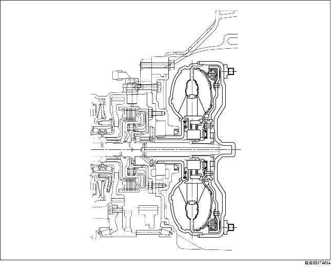

• El mecanismo del embrague del convertidor de par activa el rotor de la bomba y el impulsor de la turbina bajo ciertas condiciones, y transmite la potencia, no a través del fluido, sino directamente, para evitar la pérdida de deslizamiento del convertidor de par.
• El convertidor de par ha obtenido una eficiencia suficiente del cambio con diferencial y una relación de conversión que coincide con las características de salida de cada motor.
